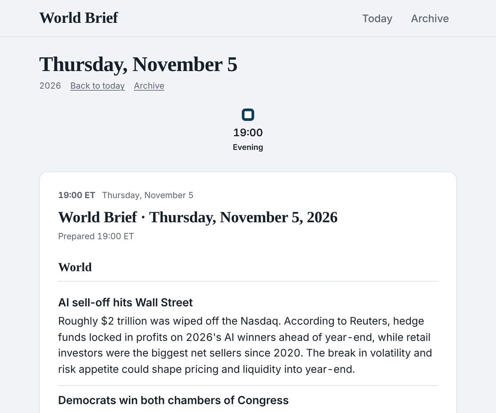
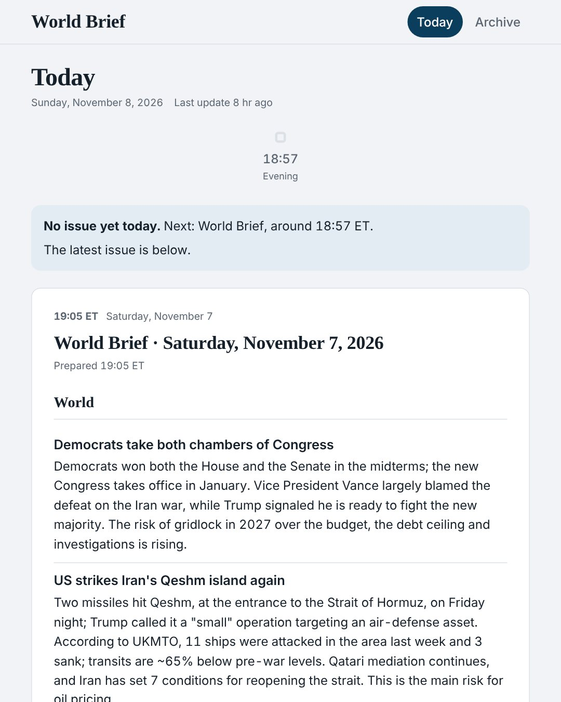
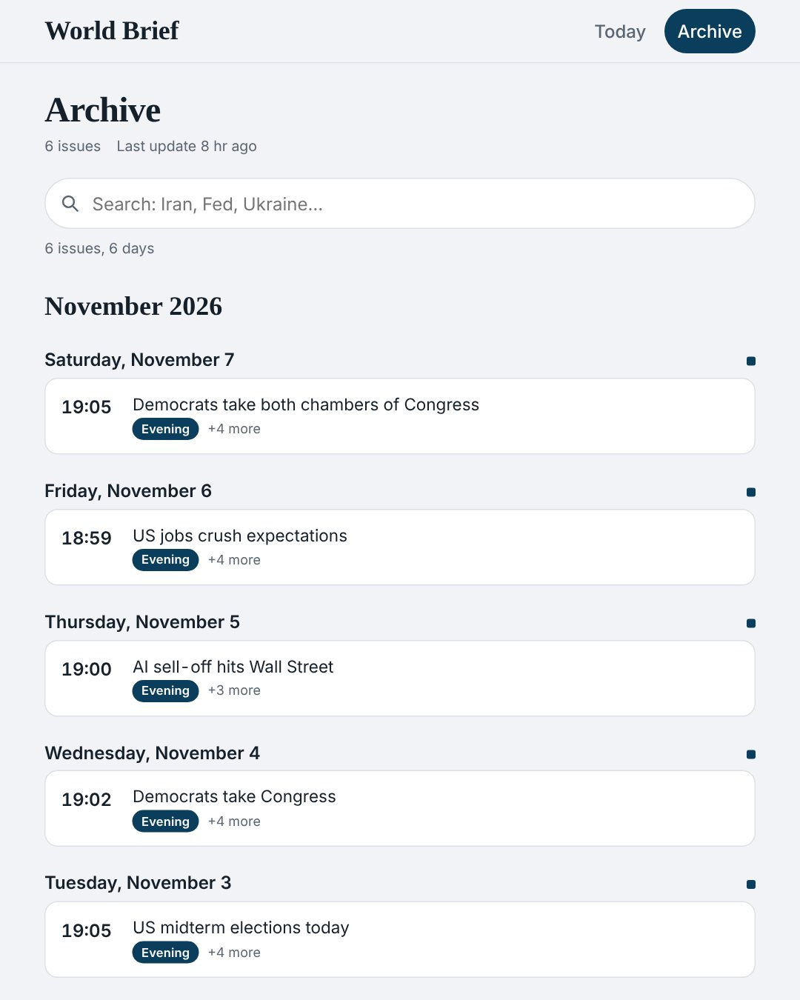
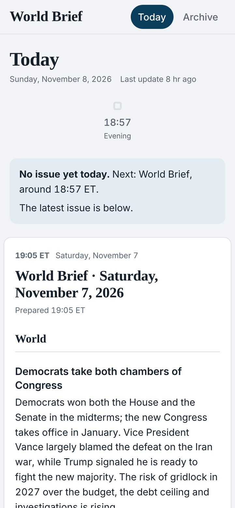

World Brief
A scheduled AI pipeline that researches the day's news every evening, emails a full brief, and publishes the world section to a public, phone-first site with a searchable archive.
- Role
- Idea, prompts, checks and site, built with Claude
- Runs
- Every evening, plus intraday updates
- Output
- Personalized brief by email; world section on the web
- Status
- Live, fully automated

01 · Problem
What need does it solve?
Keeping up with world news, markets and the topics I care about meant checking many sources every day, and most of what they publish is noise.
I wanted one short, reliable brief each evening: the few stories that matter, why they matter, the sources behind them, and clear labels on anything unconfirmed. And I did not want to do any of it by hand.
02 · Solution
How it works
A scheduled Claude task runs every evening. It researches, writes and delivers the brief with no manual steps:
- The full brief arrives by email, with extra stories picked for my interests: regions, countries and topics such as local traffic or transit changes
- The world section is published to a public site
- Each issue has 4–5 headlines, a sentence or two on why each one matters, and links to its sources
- The site shows today's issue with a marker for the next one, and an archive with search






03 · Architecture
How the system fits together
One run produces two outputs. The private brief goes to email. The public part is written to a small JSON file, checked by a validation script, saved as a dated issue file, and the index of all issues is rebuilt. The script then commits and pushes to GitHub, and GitHub Pages serves the static site, which needs no build step and checks for a new issue every few minutes.
04 · Technology
What it is built with
| Agent | Scheduled Claude task with web research |
|---|---|
| Delivery | Gmail for the full brief |
| Publishing | publish.py (Python standard library only) and a bash script that commits and pushes |
| Hosting | GitHub Pages: index.html plus data/world.json, no build step |
| Site | Plain JavaScript; follows the system dark theme; can be added to the home screen |
05 · Challenges
Hard parts and how they were solved
Two audiences from one run
The private brief is personalized and covers everything; the public site shows the world section only. The validator accepts exactly one section, headed World, and checks every issue before it goes live.
Publishing with nobody watching
Two runs can try to push at the same time. The script pulls and rebases first, rebuilds the index if needed and retries up to three times, so a collision never leaves the site half-updated.
Earning trust
Every issue lists its sources, and the validator only accepts secure links. Widely shared but unconfirmed reports are included only when clearly labeled as unverified.
Built for a phone at the end of the day
Short issues, a phone-first layout, the system dark theme, home-screen install, and an automatic check for the next issue.
06 · Results
What came out of it
- Live since November 2, 2026, with an issue every evening and no manual steps.
- An archive of every issue, searchable by headline.
- The full brief arrives by email each evening, alongside shorter intraday updates.